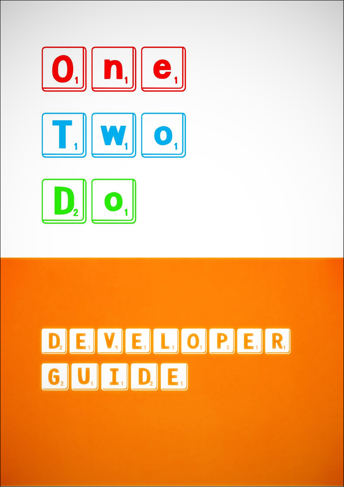
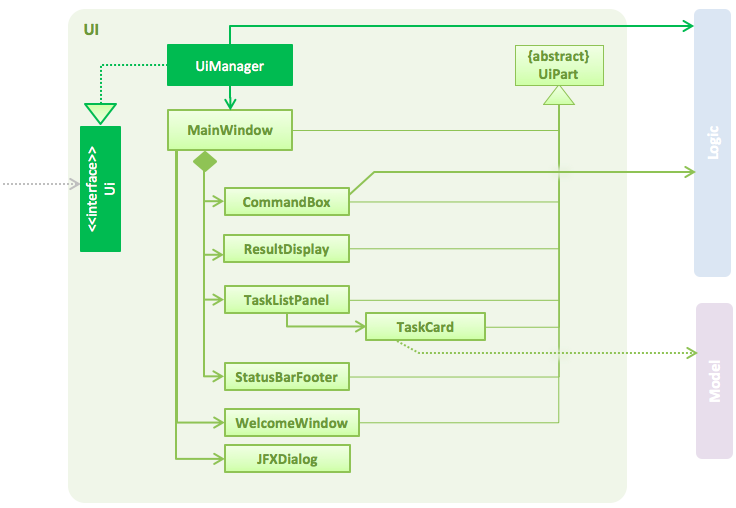
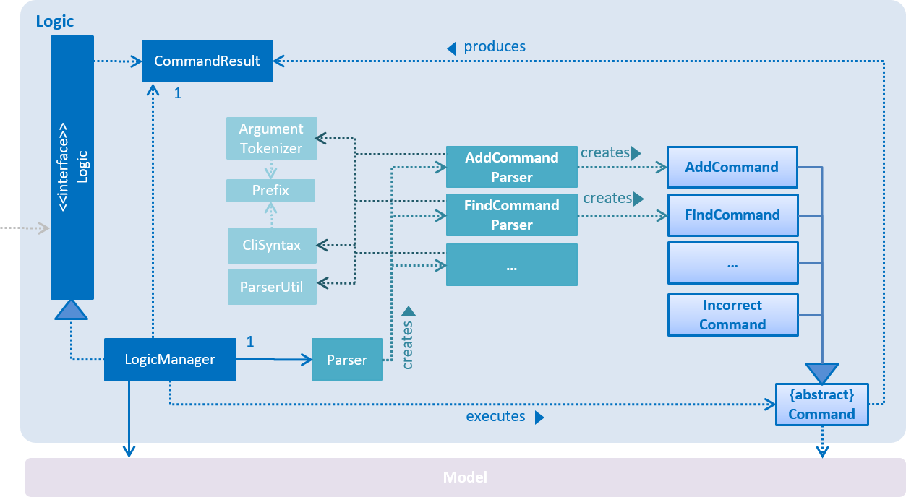
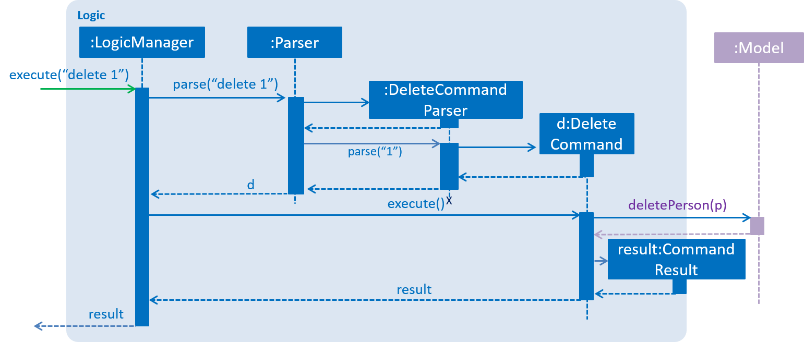
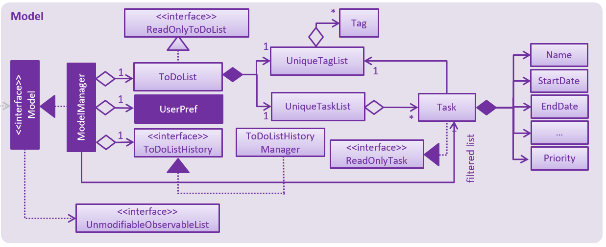
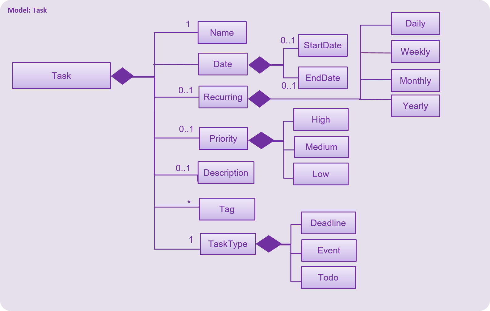
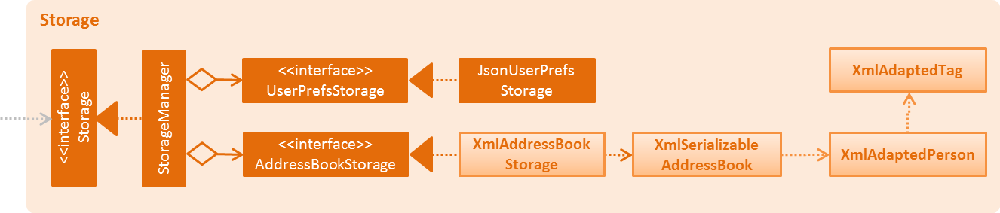

Figure 2.1.1 : Architecture Diagram

We welcome all software engineers who would like to contribute to our task manager OneTwoDo.
This guide is a comprehensive document that explains the development environment and internal structure of the application. This guide will help you to contribute to OneTwoDo.
OneTwoDo is a simple yet effective to-do list application. It helps users to remember their important tasks and to organise their schedules. It is easy to use due to its simple interface and intuitive commands. It is also designed to be extremely keyboard-friendly, so as to save time clicking on buttons and tabs.
You will have to ensure that the following settings are configured correctly to start contributing.
As prerequisites, make sure that your computer has the following software installed.
JDK 1.8.0_60 or later. Having any Java 8 version is not enough. This app will not work with earlier versions of Java 8.
Eclipse IDE.
e(fx)clipse plugin for Eclipse . You may refer to the tutorial by doing the steps 2 onwards given here: http://www.eclipse.org/efxclipse/install.html#for-the-ambitious
Buildship Gradle Integration plugin from the Eclipse Marketplace.
Checkstyle Plug-in plugin from the Eclipse Marketplace.
We recommend developing this application using Eclipse. Simply follow these steps to import OneTwoDo into your Eclipse Workspace:
Fork this repo, and clone the fork to your computer.
Open Eclipse (Note: Ensure you have installed the e(fx)clipse and buildship plugins as given in the prerequisites above).
Click File > Import.
Click Gradle > Gradle Project > Next > Next.
Click Browse, then locate the project’s directory.
Click Finish.
Notes:
If you are asked whether to ‘keep’ or ‘overwrite’ config files, choose ‘keep’.
Depending on your connection speed and server load, it may take up to 30 minutes for the set up to finish. This is because Gradle downloads library files from servers during the project set up process.
If Eclipse auto-changed any settings files during the import process, you can discard those changes.
To adhere to the common coding style adopted for this project, you may want to import Checksyle into WorkSpace as well.
Click Project -> Properties -> Checkstyle -> Local Check Configurations -> New...
Choose External Configuration File under Type.
Enter an arbitrary configuration name e.g. onetwodo.
Import checkstyle configuration file found at config/checkstyle/checkstyle.xml.
Click OK once, go to the Main tab, use the newly imported check configuration.
Tick and select files from packages, click Change..., and select the resources package.
Click OK twice. Rebuild the project if prompted.
Notes
You may encounter some problems during the setup. Please refer to the solutions below to address some common problems.
Problem: Eclipse reports compile errors after new commits are pulled from Git
Reason: Eclipse fails to recognize new files that appeared due to the Git pull.
Solution: Refresh the project in Eclipse. Right click on the project (in Eclipse package explorer), choose Gradle -> Refresh Gradle Project.
Problem: Eclipse reports some required libraries missing
Reason: Required libraries may not have been downloaded during the project import.
Solution: Run tests using Gradle once (to refresh the libraries).
In this section, you will find out more about the internal parts of the application and how they work together.
Figure 2.1.1 : Architecture Diagram
A high-level design of our OneTwoDo as shown in the Architecture Diagram in Figure 2.1.1 above.
If you want to update the diagram, you can do so in the provided
.pptxfile. Simply select the objects of the diagram, and chooseSave as picture.
Main has only one class called MainApp. Its responsible are:
At app launch: Initializes the components in the correct sequence, and connects them up with each other at app launch.
At shut down: Shuts down the components and invokes cleanup method where necessary.
Commons represents a collection of classes used by other components. Two of those classes play important roles at the architecture level.
EventsCenter : This class is used by components to communicate with other components using events (i.e. a form of Event Driven design).
LogsCenter: This class is used by many classes to write log messages to the OneTwoDo's log file.
The rest of OneTwoDo consists of these four components.
UI: The UI of the App.
Logic : The command executor.
Model : Holds the data of the App in-memory.
Storage: Reads data from, and writes data to, the hard disk.
Each of the four components defines its API in an interface with the same name as the Component. They also exposes its functionality using a {Component Name}Manager class. For example, the Logic component defines its API in the Logic.java interface and exposes its functionality using the LogicManager.java class.
Singleton
The MainApp uses the common design pattern known as "Singleton". This ensures that at any point of time, there is only one instance of MainApp. In this way, it allows the 4 major components to be encapsulated and still provides a global point of access for other classes.
Separation of concerns OneTwoDo implements the Separation of concerns (SoC) design principle.
Our Application has been split into 4 distinct sections or components, represented by the color-coding in our Architecture Diagram: UI, Model, Logic and Storage. Each section addresses a separate feature or concern. For example, the UI component specifically handles the user's interactions with the application.
Applying such a design principle ensures modularity by encapsulating information inside a section of the code which has a well-defined interface.
This ensures that changes to one componenet does not affect the usability of other components. Modifications can be made to one component without knowledge of the other components, and without having to make corresponding changes to those sections.
The Sequence Diagram below shows how the components interact for the scenario where the user issues the command delete e1

Figure 2.1.2a : Component interactions for delete e1 command (part 1)
Note how the Model simply raises a OneTwoDoChangedEvent when the OneTwoDo data is changed, instead of asking the Storage to save the updates to the hard disk.
The diagram below shows how the EventsCenter reacts to that event, which eventually results in the updates being saved to the hard disk and the status bar of the UI being updated to reflect the ‘Last Updated’ time.

Figure 2.1.2b : Component interactions for delete e1 command (part 2)
Did you realise? The event is propagated through the EventsCenter to the Storage and UI without Model having to be coupled to either of them. This is an example of how this Event Driven approach helps us reduce direct coupling between components.
Model-View-Controller (MVC) pattern
Model: Model which stores and maintains the user data in Storage, as seen in Figure 2.1.3a.
View: UI which interacts with the user and displays the data to the user.
Controller: Logic which accepts user inputs and performs follow-up actions.
The sections below give more details of each component.
In the sections below we will provide more details about each component. As OneTwoDo is written in the Object-Oriented Paradigm, you may want to pay attention to how these components work and interact with each other.

Figure 2.2.1 : Structure of the UI Component
You can find the API for this component in Ui.java.
The UI consists of a MainWindow that is made up of parts such as CommandBox, ResultDisplay, TaskListPanel, StatusBarFooter, and WelcomeWindow. These parts, including the MainWindow, inherit from the abstract UiPart class.
The UI component uses the JavaFx UI framework. The layout of these UI parts are defined in matching .fxml files that are in the src/main/resources/ view folder. For example, the layout of the MainWindow is specified in MainWindow.fxml
The jfoenix library has also been used to provide the JFXDialog component, which is used to display UI elements such as the WelcomeWindow and WebView for the command summary and user guide.
The UI component:
Logic component.Model so that the UI can auto-update when data in the Model change.CloseDialogEvent) raised from various parts of OneTwoDo and updates the UI accordingly.Observer Pattern
The UI component adopts the observer pattern as it observes the list of tasks to be shown in OneTwoDo through the UnmodifiableObservableList class and updates the tasks shown when it is notified of changes to the list.

Figure 2.3.1 : Structure of the Logic Component
You can find the API for this component in Logic.java.
Logic uses the Parser class to parse the user command.
This results in a Command object which is executed by the LogicManager.
The command execution can affect the Model (e.g. adding a person) and/or raise events.
The result of the command execution is encapsulated as a CommandResult object which is passed back to the Ui.
Given below is the Sequence Diagram for interactions within the Logic component for the execute("delete e1") API call.

Figure 2.3.1 : Interactions Inside the Logic Component for the delete d2 Command
Open Closed Principle
The Logic component follows the Open Closed Principle. Both the Command object and CommandResult object can be extended to other classes to implement different functions, without requiring themselves to be modified.
Command Pattern
The Logic component adopts the Command Pattern. This allows other components to execute the commands without having to know each of the command types. This also allows the command object to be passed around, stored and executed.

Figure 2.4.1 : Structure of the Model Component
You can find the API for this component in Model.java.
The Model is capable of the following:
Stores a UserPref object that represents the user’s preferences.
Stores the OneTwoDo data.
Exposes an UnmodifiableObservableList. They that can be ‘observed’ so that the UI automatically updates when the data in the list change.
Does not depend on any of the other three components.
Observer Pattern
The Model component uses the Observer Pattern to update the UI automatically when any changes are made to the data. This pattern is implemented by exposing the UnmodifiableObservableList which is 'observed' by the UI. Using the Observer Pattern allows the Model and UI components to interact with each other while avoiding a direct coupling between both the components.
Facade Pattern
The Model component also uses the Facade Pattern to allow other components to access it without exposing its internal functionalities. All other components need to use the Model.java interface to read or make any changes to the user data.

Figure 2.4.2 : Structure of the Task Component
You can find the API for this component in Task.java.
It is compulsory for a task to have the following parameters: Name and TaskType. Other parameters such as StartDate, EndDate, Priority, Recur, Description and Tag are optional. A task can have multiple tags. StartDate and EndDate classes inherit from Date class.
A task can be defined in the following ways:
To-do: A task without a StartDate and EndDate.
Deadline: A task with an EndDate but no StartDate.
Event: A task with both a StartDate and an EndDate.

Figure 2.5.1 : Structure of the Storage Component
You can find the API for this component in Storage.java.
The Storage component has 2 functionalities:
Saves the UserPref objects in .json format and read it back.
Saves the OneTwoDo task data in .xml format and read it back.
In the seedu.onetwodo.commons package, you can find classes that are commonly used by multiple components. They include exception classes, EventsCenter and LogsCenter.
Debugging benefits greatly from logging. We are using the java.util.logging package for logging. You can use the LogsCenter class to manage the logging levels and logging destinations.
Notes:
The logging level can be controlled using the logLevel setting in the configuration file (See Configuration).
The Logger for a class can be obtained using LogsCenter.getLogger(Class) which will log messages according to the specified logging level.
Currently log messages are output through the console and to a .log file.
There are 4 different logging levels:
SEVERE: Used for indicating critical problems detected, which may cause OneTwoDo to terminate.
WARNING: Used for indicating minor problems detected. OneTwoDo can continue to run, but warnings to caution the developer are displayed.
INFO: Used for indicating typical noteworthy information and actions performed by OneTwoDo.
FINE: Used for indicating details that are not usually noteworthy but may be useful in debugging (e.g. print the actual list instead of just its size).
You can control various important properties of the application in the file named config.json. These properties include App name and logging level. Simply open the config.json file and change their values to suit your needs.
In this section, you will find out more about how testing is done when developing OneTwoDo.
You can find all tests in the ./src/test/java folder.
Running tests in Eclipse:
To run all tests, you can simply right-click on the src/test/java folder and choose Run as > JUnit Test
To run a subset of tests, you can right-click on a test package, test class, or even a test and choose to run as a JUnit test.
Running tests using Gradle:
We have two types of tests:
GUI Tests - These are System Tests that test the entire application by simulating user actions on the GUI. You can find them in the guitests package.
Non-GUI Tests - These are tests not involving the GUI. They include:
Unit tests: This targets the lowest level methods/classes, e.g. seedu.onetwodo.commons.UrlUtilTest.
Integration tests: This checks the integration of multiple code units, e.g. seedu.onetwodo.storage.StorageManagerTest.
Hybrids of unit and integration tests.: These tests help to check multiple code units as well as how the are connected together. For example please see seedu.onetwodo.logic.LogicManagerTest.
Thanks to the TestFX library we use, GUI tests can be run in the headless mode. In the headless mode, GUI tests do not show up on the screen. That means the developer can do other things on the Computer while the tests are running. You may want to see UsingGradle.md to learn how to run these tests.
Problem: Tests fail because NullPointException when AssertionError is expected.
This is caused by assertions not being enabled for JUnit tests. This usually occurs if you are not using a recent Eclipse version (i.e. Neon or later). Try enabling assertions in JUnit tests as described here: stackoverflow.com/questions/2522897/eclipse-junit-ea-vm-option. Also, you can try to delete previous run configurations that were created when you ran the tests.
In this section, you will find out more about how to make builds, tests, and releases more rapidly, frequently, and reliably.
We use Gradle for automation build. You can check UsingGradle.md to learn more about Gradle automation build.
We use Travis CI and AppVeyor to perform Continuous Integration on our projects.
You can check UsingTravis.md and UsingAppVeyor.md for more details.
You can visit UsingGithubPages.md to learn how to use GitHub Pages to publish documentation to the project site.
Here are the steps to create a new release:
Generate a JAR file using Gradle.
Tag the repo with the version number. e.g. v0.1.
Create a new release using GitHub.
and upload the JAR file you created.
Projects often depends on third-party libraries. Likewise, OneTwoDo depends on the Jackson library for XML parsing. Do not worry about managing these dependencies. It can be automated using Gradle. Gradle can do amazing stuff such as downloading the dependencies automatically. This is better than the alternatives of:
Including those libraries in the repo (this bloats the repo size).
Requiring developers to download those libraries manually (this creates extra work for developers.
| Priority | As a … | I want to … | So that I can… |
| High | new user | see usage instructions | refer to instructions when I forget how to use the App |
| High | user | add a new task | add task to manage all my to-do |
| High | user | delete a task | remove entries that I no longer need |
| High | user with many tasks | find a task by keywords | search for specific task especially when the list is huge |
| High | user | edit a task | edit a task if there are any changes |
| High | user | clear all tasks | quickly start using the tool from scratch |
| High | user | close application | exit after use |
| High | organized user | add tags to a task | organize them by tags |
| High | user | add description to task | describe tasks in more detail |
| High | user | view task description | view the task in details |
| High | user | list tasks | view all uncompleted task |
| High | advanced user | sort task by importance | prioritise which task to do first |
| High | last minute user | sort tasks by most upcoming tasks | get myself prepared for more urgent tasks |
| High | advanced user | find tasks by tag | find tasks quickly that contains the specific tag |
| High | advanced user | set reminder to a task | be notified when tasks are approaching due date |
| High | user | select folder to save data storage | specify a specific folder and file for data storage |
| High | user | undo most recent action | undo action to rectify mistake |
| Medium | user | redo most recent action | redo action to rectify mistake |
| Medium | user | add task to nearest free slot automatically | add task easily without browsing for free time |
| Medium | user with multiple recurring tasks | add recurring tasks | avoid adding similar task one by one |
| Medium | user with multiple recurring tasks | edit all instances of a recurring task | be more efficient when editing recurring tasks |
| Medium | advanced user | filter tasks by multiple keywords | search tasks by more specific criteria |
| Medium | user | list all tags | quickly view all the tags in the to-do list |
| Medium | user | keep track of completed tasks | keep them in track for future references |
| Medium | busy user | postpone task | defer uncompleted task to near future where I am free |
| Medium | advanced user | select task and pin it at the top of display | quickly mark certain tasks as demanding of priority attention |
| Medium | existing google calendar user | sync google calendar on create, update and delete tasks | exploit google calendar and sync with this task manager |
| Medium | user with heavy email usage | send email notification for upcoming tasks | remind me on tasks that are approaching due date |
| Medium | user who prefers keyboard | open/close application via keyboard shortcut | quickly open or exit program easily without mouse click |
| Medium | advanced user | remove all tasks with certain tag | quickly remove all tasks with some similarity |
| Low | advanced user | change all tag names in one go | quickly update all tasks with that tag name |
| Low | user with many tasks | assign priorities to tasks | distinguish and pinpoint importance task immediately just by looking |
| Low | user | list overdue tasks | filter out overdue tasks to decide for further actions |
| Low | user | remove tasks within certain range | easily specify date to remove tasks within that range. |
| Low | user | list near future free slot | choose suitable free slot to add task |
Priorities:
"System" refers to OneTwoDo. "Actor" refers the user.
User input information to add task.
System notifies user that the task has been successfully added.
Use case ends.
2a. Task already exists.
2a1. System informs user that the task already exists and doesn’t add repeated task.
Use case ends.
2b. Invalid command format.
2b1. System informs user that the command format is invalid and outputs a sample format to user.
Use case ends.
System display a list of tasks.
User input task index to specify which task to delete.
System notifies user that task has been successfully deleted.
Use case ends.
1a. List is empty.
1a1. System informs user that there is no task to delete.
Use case ends.
2a. Invalid command format.
2a1. System informs user that the input is invalid and outputs a sample format.
Use case resume at 1.
2b. User input index is not valid.
2b1. System informs user that the input index is invalid.
Use case resume at 1.
User requests list of tasks.
System displays a list of tasks.
User selects a task to edit.
System shows user the task information.
User edits and submits a new task information.
System displays changes made to task.
Use case ends.
2a. The list is empty.
2a1. System informs user that there is no task to edit.
Use case ends.
3a. User task selection is invalid.
3a1. System shows error message.
Use case resumes from step 2.
3b. System detects an error in the data that user entered.
3b1. System selects valid task.
3b2. User enters new data.
3b3. Repeat steps 3b1 and 3b2 until data has no errors.
Use case resumes from step 4.
3c. User requests to tag a task with a category that is not currently in the system.
3c1. System creates the category.
Use case resumes from step 4.
User searches for task.
System lists tasks which match the keywords entered by user.
Use case ends.
2a. Task does not exist.
2a1. System informs user that no tasks is found.
Use case ends.
User requests list of tasks.
System displays list of tasks.
Use case ends.
1a. User requests to list task in a certain category.
1a1. System displays list of tasks in that category.
Use case ends.
2a. The list is empty.
2a1. System displays empty list.
Use case ends.
User requests to list the tasks.
System displays a list of tasks.
User selects the task to mark as done.
System shows user remaining tasks that are uncompleted.
Use case ends.
3a. User task selection is invalid.
3a1. System shows error message.
Use case resumes from step 2.
User issues command undo.
System reverts user’s previous command and displays feedback message to user.
Use case ends.
2a. There is no previous command yet.
2a1. System feedbacks to user that no previous command has found.
Use case ends.
2b. Previous command is not mutable.
2b1. System feedbacks to user no action required.
Use case ends.
Should work on any mainstream OS.
Should be able to store up to 500 tasks.
Should work in online or offline mode.
Should respond to commands within 2 seconds.
Programme should startup within 3 seconds.
Programme should be open source code and readily available.
Should have an easy to use interface.
Should be able to handle exceptions from user input.
Should work as a standalone application.
Should have an executable file that can be launched by double clicking or keyboard shortcut.
Should not use relational databases to store data.
Command line interface should be the main mode of input.
Should not violate any copyrights.
Should not contain obscene or inappropriate content.
| Mainstream OS | Windows, Linux, Unix, OS-X. |
| Keyword | Words in task names, tag names, and task description. |
| Invalid Commands | Invalid commands includes invalid arguments. |
| Error message | Error message includes suggestion for correct command. |
| START_DATE | START_DATE refers to start date and time entered. Defaults to time of 0000 hrs if no time is indicated. |
| END_DATE | END_DATE refers to end of date and time entered. Defaults to time of 2359 hrs if no time is indicated. |
| Event task | Tasks that have a specific start and end date. |
| Deadline task | Tasks that only have a specific end date. |
| To-Do task | Tasks that have no start or end date. |
| Category | One of Event, Deadline or To-do. |
Pros:
Easy to use interface.
User can add recurring tasks.
User can set a start date and end date for the task.
User can add tag to the task.
User can view a list of all completed tasks.
User can set priority to task.
User can postpone a task.
Cons:
No online support or video tutorials for beginners.
Pro version is very expensive and most features are only available in pro version.
No security for data in terms of encryption or HTTPS.
Pros:
Calendar user interface, click on events on the calendar to view more details.
Users can edit events by dragging.
Users are able to import calendars using .ical files.
Users can edit a single instance of event, or recurring events.
Users can be notified of approaching events.
Users have daily, weekly, monthly, and "4-days" types of view.
Users can sync and access on multiple platforms, like mobile, and desktop.
Cons:
Have to be online to access calendar.
No command line interface.
Updates may take a while to sync due to network issues.
Pros:
Allows user to note down descriptions and more information for each task.
Allows user to create subtasks for each task.
Allows user to set "Reminder" and “Due Date” separately.
Allows user to highlight(star) a task.
Separates "Delete" and “Mark as complete”.
Parses the reminder time when user types in the task name.
Automatically creates "Today" and “Week” folder for user to see what needs to be done for today and this week (more urgent tasks).
Allows user to categorise tasks using folders, e.g. (work, family).
Cons:
Just highlighting (starring) is not enough. User may just highlight all tasks and that defeats the purpose of starring.
Tasks are not sorted in chronological order in the main folder.
Pros:
It has simulation game element which keep the work fun and motivating.
It has colourful and clean user interface that make important tasks stand out.
It supports multiple platforms such as mobile and desktop.
It supports recurring task adding.
It can set multiple and different reminders on any task.
It can easily be reordered/sorted using name or tags.
Cons:
Unable to view the calendar when selecting tasks
Adding tasks require mouse/ touch screen instead of keyboard entering.
Has the potential of distraction due to the existence of game elements.
Deadline of the tasks are not shown unless clicked.
Unable to mark tasks as done without keeping them for future references.